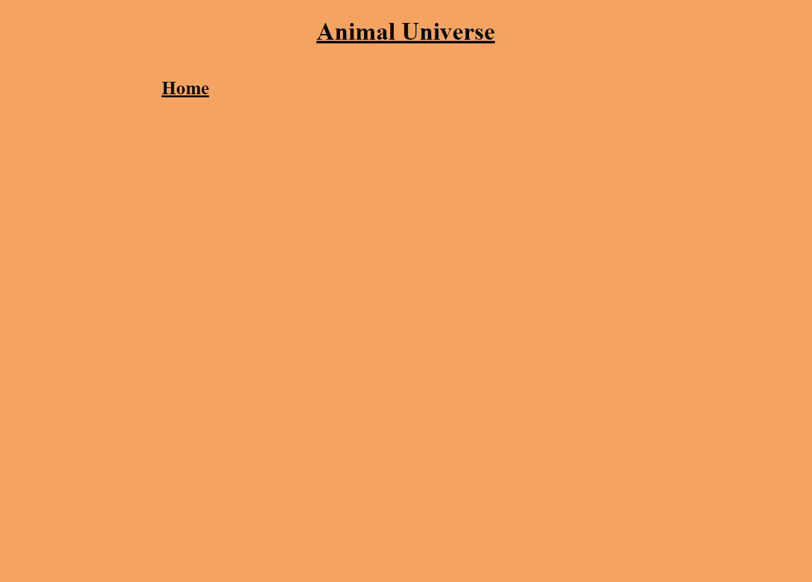
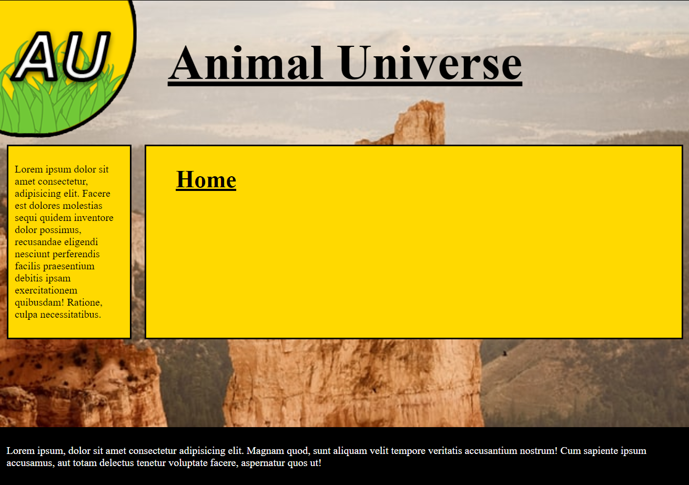
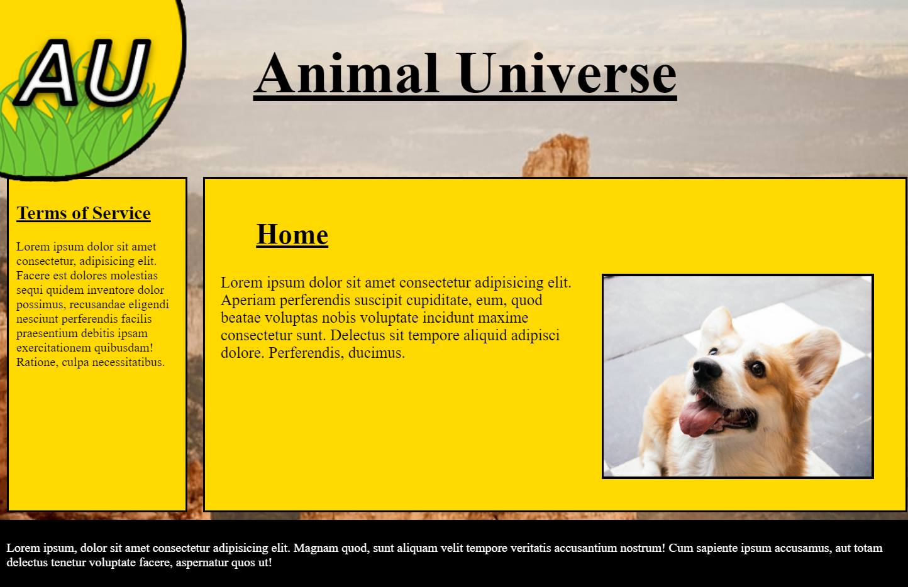
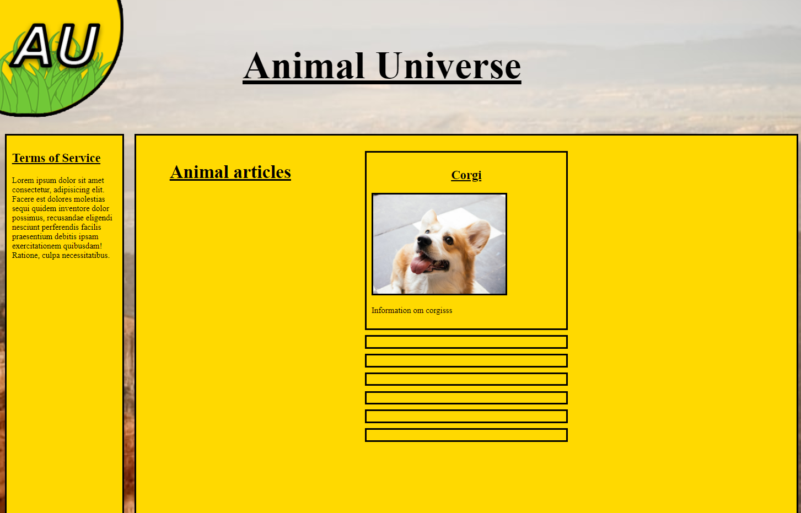

Jag ska skapa en hemsida vid namn "Animal Universe" för att sprida intresseveckande information för olika djurraser runt om i världen. Jag riktar mig åt en målgrupp som är intresserad av att lära sig utan att läsa igenom sido-långa Wikipediasidor med komplicerad och svårförstålig fakta. Därmed blir målet med min sida att skapa en sido med kort, konkret, intressan och relevant fakta med hjälp av ett fåtal konsekventa rubriker för varje djur med ett specifikt syfte. Exempelvis en "Fun fact" rubrik med syfte att väcka humor och intresse i texten.
he: Header, as: Aside, ar: Article, fo: Footer.
"when logo press" / "logo button press": Nav kommer ner, liknande hamburgarmeny.
Skala i fr längst ner på varje skiss (kan komma att ändras)


| Vecka | På lektionen | Utanför lektionen |
|---|---|---|
| 4 |
|
|
| 5 |
|
|
| 6 |
|
|
| 7 |
|
|
| 8 |
|
|
| 9 |
|
|
| 10 |
|
|
| 11 |
|
|
| 12 |
|
Idag har jag kommit på min idé och skrivit motsvarande Idébeskrivning samt fyllt i Schemat, jag hann dessutom påbörja skissen av min websida. Dagens lektion har inte varit särskillt komplicerad och har därför inte stött på någon problem. Däremot tog det sin tid att komma på en idé och hann därför inte särskillt långt på min skiss.
Jag har idag lyckats att färdigställa mina handskisser för att sedan påbörja mitt index i Visual Studio Code. I VSC hann jag med att skapa ett fungerande grid med förhållandet 1fr 3fr 1fr för att matcha min skiss och än så länge passar måtten in väl. Jag hann dessutom skapa en klass för texttyper som ska vara "Underlined". Nästa steg är att skapa loggan i Photoshop som ska ligga uppe i vänstra hörnet och sedan fortsätta att ge den en funktion med hjälp av JavaScript så att den agerar som en hamburgarmeny. Därefter behöver jag fylla på resterande information och hitta non-copyright bilder som jag kan använda mig av. Det sista jag kommer behöva göra är en footer, som jag inte vet vad jag ska ha i än.
Idag är jag i stort sätt klar med mitt index samt skapat en logga i Photoshop. Loggan gjorde jag genom att skapa en ifylls cirkel och placera den i uppe, vänstra hörnet. Därefter lade jag till initialerna för Animal Universe, det vill säga AU och gav den blendingsoptions i form av en "linje" för att skapa en ramliknande effekt på cirkeln som dessutom hade en annan färg än texten själv. Sedan lade jag till en PNG med tecknat gräs (som jag fick tag på genom att filtra google bilder efter bilder som man får använda och redigera. Jag placerade bilden på cirkeln för att sedan "ritstiftet" för att markera delen som skulle befinna sig i cirkeln. Sist lade jag till ett nytt lager som jag målade detaljer i form av färger eller liknande som saknades efter att jag croppade gräsbilden efter cirkeln. Planen för loggan kommer senare att fungera som en hamburgarmeny, vilket jag siktar efter att jobba på nästa lektion. I övrigt har jag gjort en aside och article med backgroundcolor (samma som loggan) samt boarder till respektive. I övrigt har jag lagt till en svart footer som är placerad längst ner på sidan samt bytt bakgrunden till en image istället för en ren färg.
Idag fixade jag en knapp med animation som fungerar på min PNG-logga med hjälp av att skapa ett flertal div's och sedan skapa animationen med JavaScript som i sin tur skapar en "change"-klass som sedan ändrar positionen på NAVen. Däremot har jag nu istället ett problem med hur loggan och NAVen (knappen) inte skalar jämnt med övriga delar av sidan. Det är vad jag ska jobba på att lösa nästa vecka.
Jag lyckades idag fixa knappen samt ge elementen i Naven en animation när man hoverar över dem. Jag fixade knappen genom att sätta en fast width och sedan ändra widthen med mediaquaries som jag började på efter det att jag färdigställde knappen och dess funktion. Nästa vecka kommer jag att förhoppningsvis färdigställa index.


Idag lyckades jag till slut få klart mitt index och är på god väg att avklara min andra sida. Jag fördigställde mitt index genom att fixa till footern genom att ta bort width=100% (för att den inte skulle fylla ut mer än bredden på skärmen då jag har en padding i footern) samt att jag tog bort position=absolute så att den lade sig längst ner. Sedan har jag även lagt i text och bild i min article och använt mig av float för att placera bilden på höger sida av min article. På min nästa sida "animal articles" har jag skapat ett grid area i min article för att kunna lägga items som jag skapat med hjälp av div. Jag skapade gridet genom att skapa en ny klass för den nya sidans body. Nästa gång ska jag se till att alla mina items läggs på rätt platts samt att gridet börjar under titeln istället för att ta upp hela article'n.
 